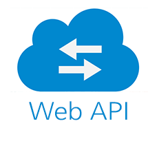
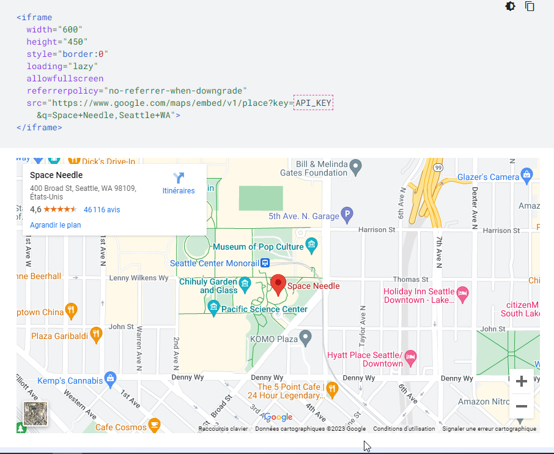

Une API Web est une interface de programmation d'application (API) pour un serveur Web ou un navigateur Web. En tant que concept de
développement Web, il peut être lié au côté client d'une application Web (y compris à travers un framework web).
Côté client :
Une API Web côté client est une interface de programmation permettant d'étendre les fonctionnalités d'un navigateur Web ou d'un
autre client HTTP. À l'origine, celles-ci se présentaient le plus souvent sous la forme d'extensions de navigateur natives, mais la
plupart des API les plus récentes se basent sur des appels JavaScript standardisées. La Fondation Mozilla a créé sa spécification
d'API Web qui est conçue pour aider à remplacer les applications mobiles natives par des applications HTML51,2. Google a créé son
architecture Native Client qui est conçue pour aider à remplacer les plug-ins natifs non sécurisés par des extensions et des
applications natives sécurisées en bac à sable. Ils l'ont également rendu portable en utilisant un compilateur LLVM AOT modifié.
On parle d'API à partir du moment où une entité informatique cherche à agir avec ou sur un système tiers et que cette interaction se
fait de manière normalisée en respectant les contraintes d'accès définies par le système tiers. On dit alors que le système tiers «
expose une API ». À ce titre, des interactions aussi diverses que la signature d'une fonction, une URL ou un RPC par exemple sont
parfois considérés comme des API (ou micro-API) à part entière.
Côté Serveur :
Une API Web côté serveur est servie au moyen d'un serveur Web basé sur HTTP. Elle se compose d'un ou plusieurs points d'accès
exposés publiquement répondant avec des données, généralement exprimé en JSON ou XML. Une API serveur (SAPI) n'est pas considérée
comme une API Web côté serveur, sauf si elle est publiquement accessible par une application Web distante. Les applications
composites sont des applications Web qui combinent l'utilisation de plusieurs API Web côté serveur3,4,5. Les webhooks sont des API
Web côté serveur qui prennent en entrée un identificateur de ressource uniforme (URI) conçu pour être utilisé comme un canal nommé
distant ou un type de rappel tel que le serveur agit en tant que client pour déréférencer l'URI fourni et déclencher un événement
sur un autre serveur qui gère cet événement fournissant ainsi un type d'IPC peer-to-peer.
Quelques exemples d'API :
Azure API (dont API App, API Management12)
Graph API de Facebook
Google Maps API
API de Salesforce
API de PicWish
Exemple de l'API Google pour le Web, l'API Maps Embed :
Vous pouvez définir l'URL de l'API Maps Embed en tant qu'attribut src d'un iFrame. Lorsque vous configurez une propriété src, le
paramètre q requis peut accepter un nom de lieu, une adresse, un plus code ou un ID de lieu avec caractères d'échappement:
